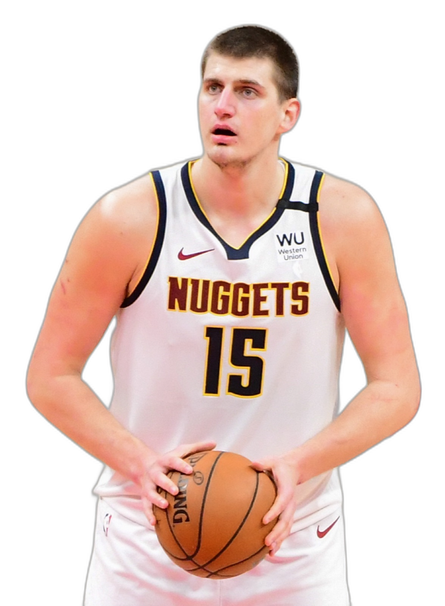

1891 ОНООС ӨНӨӨДРИЙГ ХҮРТЭЛХ ЗАМНАЛ
Жеймс Нейсмит
Спрингфилд хотод багш Жеймс Нейсмит сагсан бөмбөгийг бүтээсэн. Жимсний дүнзэн сагсыг хананд өлгөж тоглодог байсан.
BAA Үүссэн
1946 оны 6-р сарын 6-нд Нью-Йорк хотод "Basketball Association of America" нэртэйгээр байгуулагджээ.
NBA Нэршил
ABA гэх өөр лигтэй нэгдэж, өнөөгийн албан ёсны NBA (National Basketball Association) нэрээ авсан.
Дэлхийн тавцан
Дэлхийн хамгийн алдартай спортын лигүүдийн нэг болж, 200 гаруй улсад маш олон тэрбум хүн үздэг болжээ.

ВИЛТ ЧЕМБЕРЛЕН (1962)

БЭМ АДЕБАЙО (2026)
КОБИ БРАЙАНТ

КЛЭЙ ТОМПСОН (12 МИНУТ)

БИЛЛ РАССЕЛ (БОСТОН СЕЛТИКС)
СТЕФЕН КАРРИ (2016)

ЛЕБРОН ЖЕЙМС (2023)

ТРИПЛ-ДАБЛЫН ШИНЭ ЭРИН ҮЕ
Улирлын трипл-дабл дундаж
Расселл Уэстбрук 2017 онд улирал бүтнээр нь дунджаар трипл-дабл хийсэн, Оскар Робертсоноос 55 жилийн дараа. Карьер дээрээ 200 орчим трипл-дабл хийсэн нь түүхэн дэх хамгийн их юм.

Центр, трипл-дабл дундаж
Никола Йокич төвийн тоглогч мөртлөө нэг улирлын туршид оноо, самбар, дамжуулалтаар дунджаар 10-аас дээш үзүүлж төвийн тоглогчийн байрлалын ойлголтыг өөрчилсөн.

ХОВОР БӨГӨӨД ДАВТАГДАШГҮЙ РЕКОРДУУД
Рэжги Миллер (9 секундэд)
1995 онд Никсийн эсрэг ойролцоогоор 9 секундын дотор 8 оноо авч, ялагдах гэж байсан багаа ялалтад хүргэсэн.

Дэнис Родман (Самбар)
201 см өндөртэй мөртлөө 7 жил дараалан самбараар лигт тэргүүлсэн хамгаалалтын хана болсон тоглогч.

Жон Стоктон (Дамжуулалт)
15,806 дамжуулалт ба бөмбөг булаалтаар NBA-ийн түүхэн дэх хол тасархай тэргүүн амжилтын эзэн.
ЛОС-АНЖЕЛЕС ЛЭЙКЕРС (1971-72)

ӨНДӨР БА НАМХАН ТОГЛОГЧИД